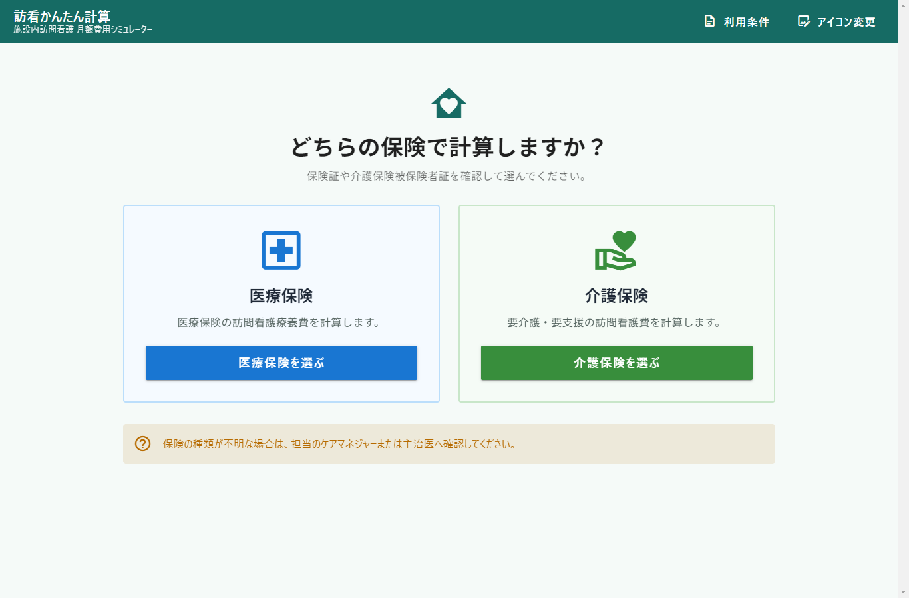
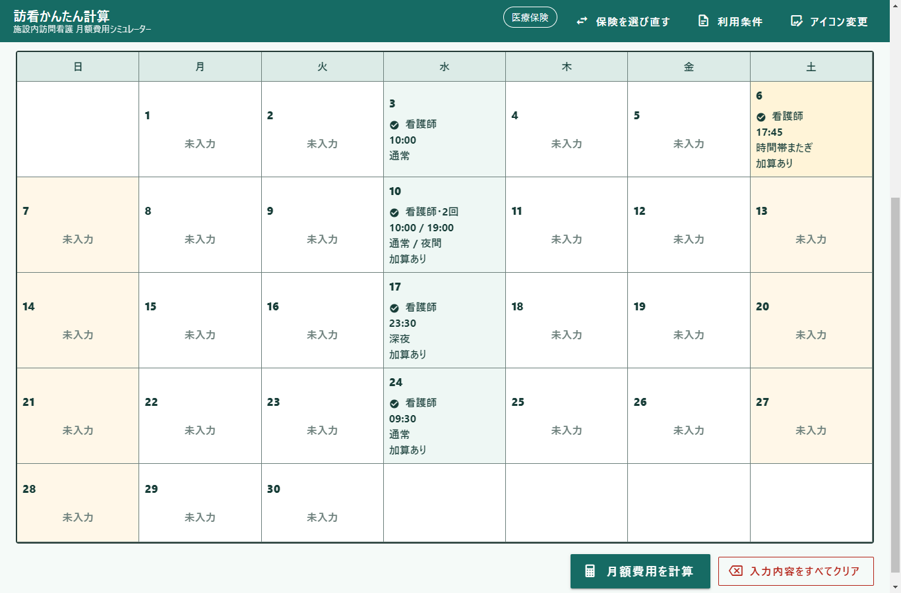
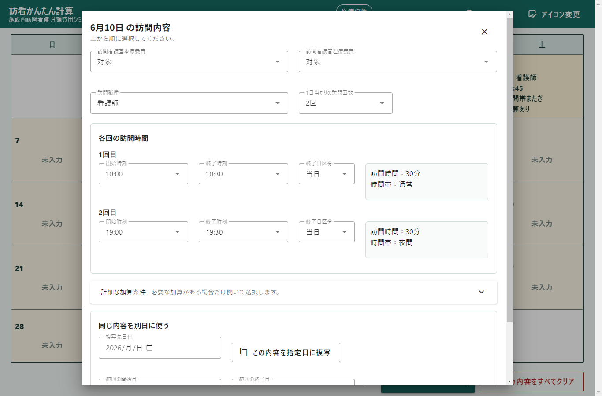
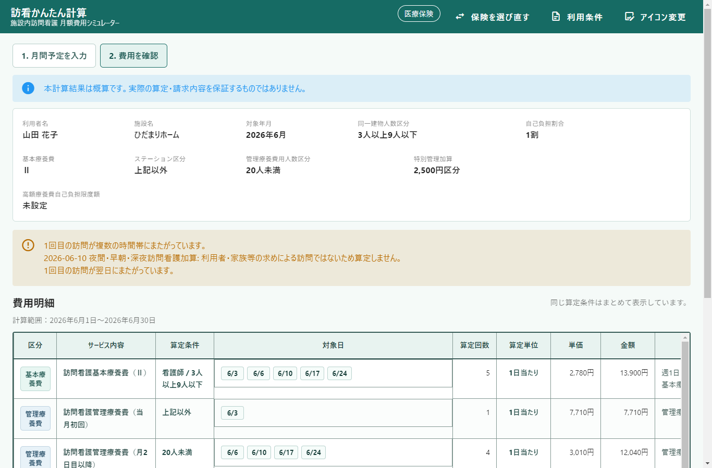
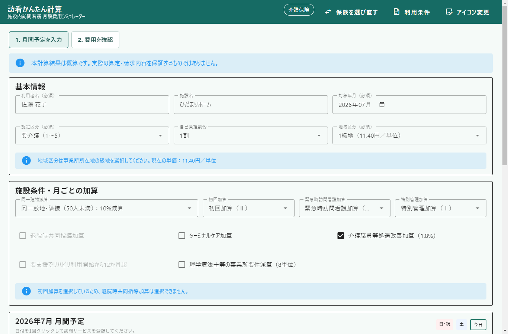
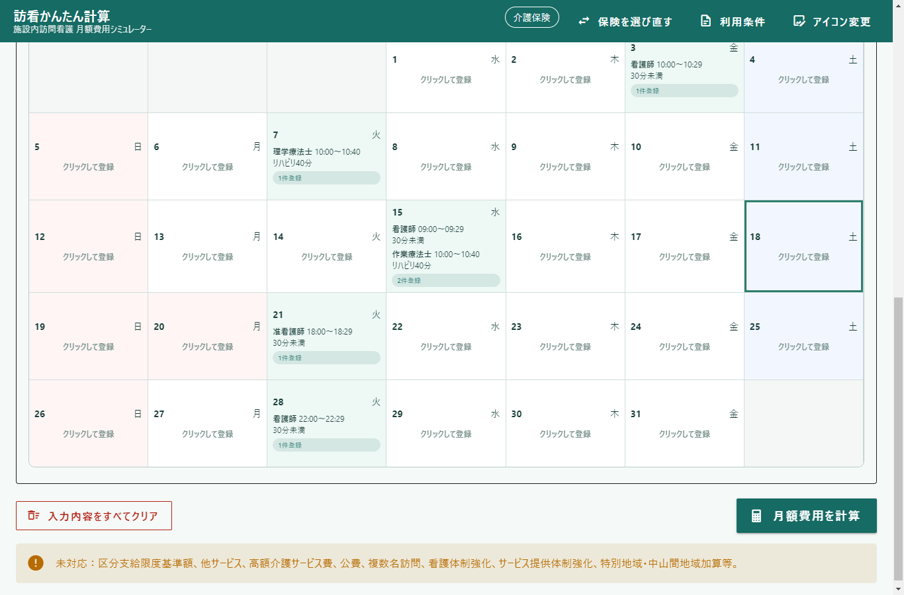
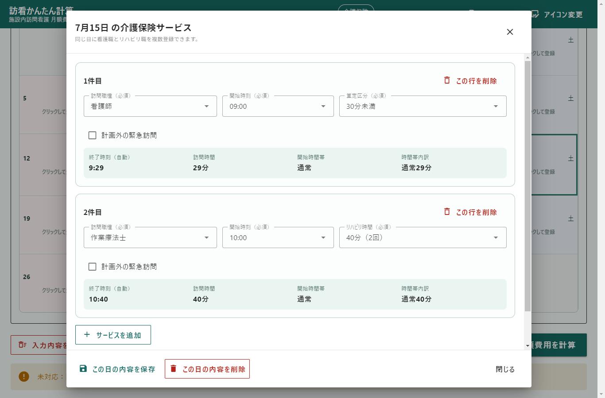
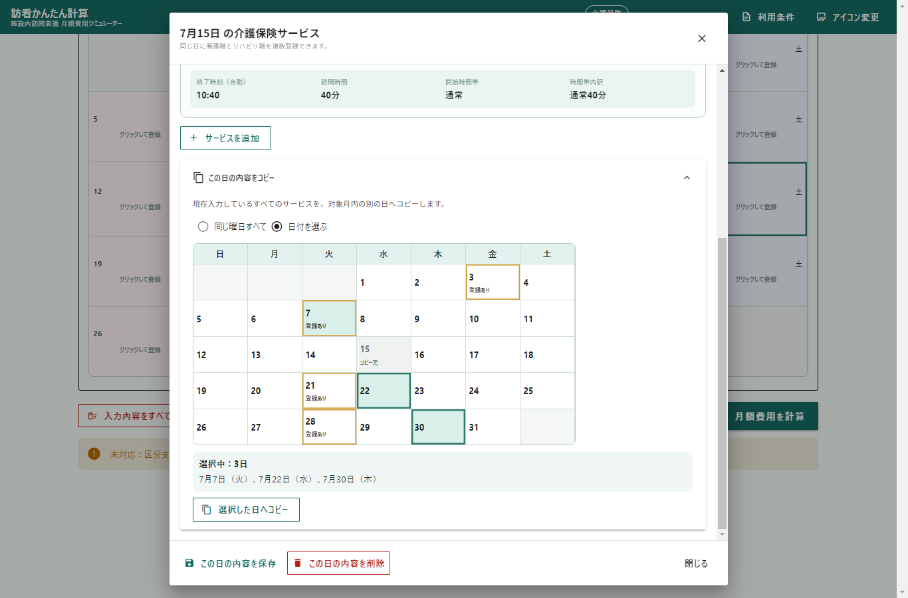
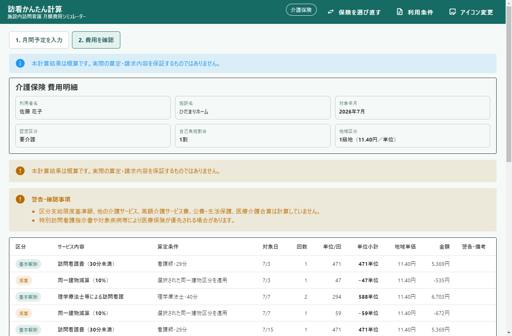

オフライン
インターネット接続なしで入力・計算できます。
施設内訪問看護 月額費用シミュレーター
医療保険・介護保険対応版 v{{APP_VERSION}}
1人の利用者について1か月分の訪問予定と算定条件を入力し、 医療保険または介護保険の月額費用と利用者負担額の概算を確認するWindows向けデスクトップアプリです。
本計算結果は概算です。実際の算定・請求内容を保証するものではありません。
Purpose
現場での確認を支援する概算ツールです。請求処理、レセプト作成、正式な請求額の確定、 複数利用者の一括計算は行いません。
時刻から訪問時間と時間帯を自動判定し、確認が必要な条件は警告と文章で案内します。
Insurance Selection
保険証や介護保険被保険者証を確認して、計算する保険を選びます。画面上部からいつでも選び直せます。

Medical Insurance
月間カレンダーから日付を選び、基本療養費、管理療養費、職種、訪問回数、時刻、加算条件を登録します。


Medical Detail
基本療養費、管理療養費、各種加算を明細化し、月額費用総額と利用者負担額の概算を表示します。

Care Insurance
要介護・要支援、地域区分、同一建物減算、月ごとの加算を設定し、カレンダーへ訪問サービスを登録します。


Care Services & Copy
同じ日に看護職とリハビリ職を複数登録できます。看護職は開始時刻と算定区分、リハビリ職は開始時刻と20分／40分を選ぶだけで、終了時刻を自動計算します。


Care Detail
基本報酬、加算、減算を単位で表示し、地域単価から総費用と利用者負担額の概算を算出します。

Use & Cautions
インターネット接続なしで入力・計算できます。
入力内容はPC内へ保存され、再起動後も確認できます。
印刷プレビュー、印刷、PDF、Excelに対応します。
Windows用インストーラーから導入できます。